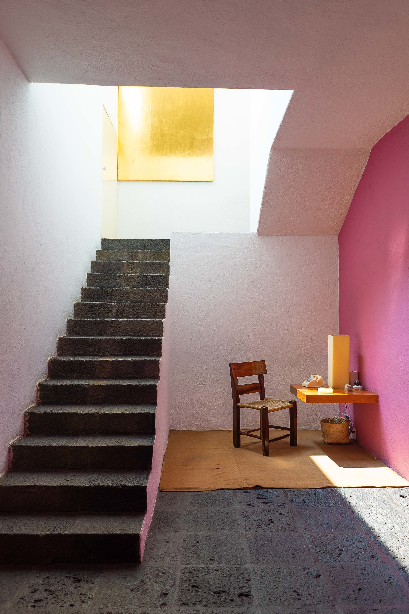

Born in Guadalajara in 1902,
Luis Ramiro Barragán Morfín is regarded as the most
prominent figure in modern Mexican architecture. By the time of his
death in 1988, his persona and way of working had attained almost
mythical status, and the interest in his oeuvre has increased ever
since.
Learn more >>
Notable Works
Praised in the Pritzker Prize laudatio for “his commitment to
architecture as a sublime act of poetic imagination”, Barragán’s
architectural approach embraced the principles of Modernism while
remaining deeply rooted in Mexican tradition.
Below are a few notable examples of his work.
See a full list of works here >>
Luis Barragán House and Studio
-

-

Located in the west of Mexico City, the residence was built in 1948
after the Second World War. It reflects Barragán's design style during
this period and remained his residence until his death in 1988. In 1994
it was converted into a museum.
The house became a UNESCO World Heritage Site in 2004.
Plan your visit >>
Casa Giraldi
The last project Barragán completed before he died, Casa Gilardi is
known for the huge jacaranda tree decorating its interior courtyard, and
for a striking hallway with vertical apertures that bounce sunlight
against brightly painted yellow walls and out into an electric blue room
with an indoor pool.
It was built in 1976, within the Federal District of Mexico, in a
village called Tacubaya, and remains one of the few Barragán-designed
homes still in good shape and open to the public.
Plan your visit >>